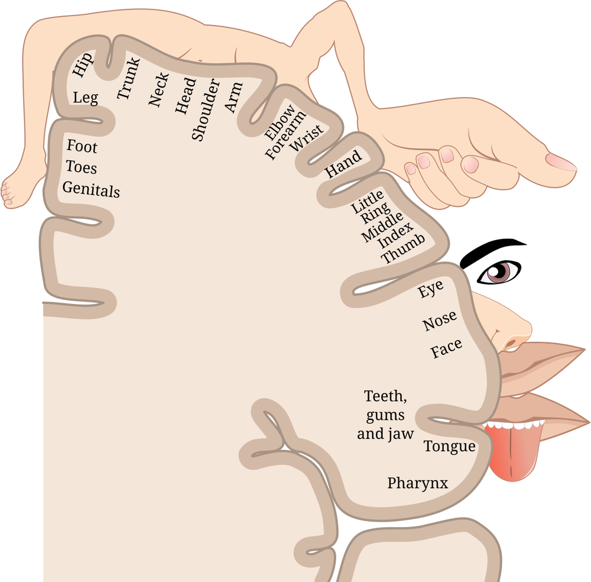

대뇌 호문쿨루스 (Cortical Homunculus)

| # | 원문 | 한국어 |
|---|---|---|
| 1 | Genitals | 생식기 |
| 2 | Foot / Toes | 발 / 발가락 |
| 3 | Leg | 다리 |
| 4 | Hip | 엉덩이 |
| 5 | Trunk | 몸통 |
| 6 | Neck | 목 |
| 7 | Head | 머리 |
| 8 | Shoulder | 어깨 |
| 9 | Arm | 팔 |
| 10 | Elbow | 팔꿈치 |
| 11 | Forearm | 아래팔 |
| 12 | Wrist | 손목 |
| 13 | Hand | 손 |
| 14 | Little / Ring / Middle / Index / Thumb | 새끼·약·가운데·집게손가락 / 엄지 |
| 15 | Eye | 눈 |
| 16 | Nose | 코 |
| 17 | Face | 얼굴 |
| 18 | Teeth, gums and jaw | 이·잇몸·턱 |
| 19 | Tongue | 혀 |
| 20 | Pharynx | 인두 |
쉽게 풀면
지하철 노선도를 떠올려보면, 실제 거리 비율과 상관없이 환승역이 많고 복잡한 구간은 크게, 한적한 구간은 작게 그려 넣는다. 대뇌 호문쿨루스도 비슷한 원리로 그려진 '뇌 속 신체 지도'이다.
대뇌피질에는 몸의 각 부위에서 오는 감각 정보를 받아들이는 영역과 몸의 움직임을 명령하는 영역이 있는데, 이 영역들은 신체 부위의 실제 크기가 아니라 그 부위를 얼마나 세밀하게 감지하고 정교하게 움직이는지에 비례해 넓이를 차지한다.
그래서 이를 사람 모양으로 그려보면 손가락, 입술, 혀는 몸통이나 다리에 비해 터무니없이 크고, 반대로 등이나 허벅지는 아주 작게 표현된 기괴한 형상이 된다. 이 왜곡된 인형 같은 그림이 바로 '호문쿨루스(작은 인간)'라는 이름의 유래이다.
왜 중요한가
대뇌 호문쿨루스는 뇌가 신체를 있는 그대로 축소해 표상하는 것이 아니라 기능적 중요도에 따라 자원을 배분한다는 원리를 상징적으로 보여주기 때문에, 신경과학 교육과 연구 전반에서 기본 참조 모델로 쓰인다. 특히 절단 후 환상통, 뇌졸중 이후 재활, 로봇 의수나 뇌-기계 인터페이스 설계처럼 신체 지도의 가소성을 다루는 응용 연구에서 핵심 개념으로 활용된다.
핵심 정리
- 정의: 몸의 각 부위가 대뇌피질 위에 차지하는 면적을 비례로 그린 지도이다. 전중심이랑(일차 운동피질)과 후중심이랑(일차 체성감각피질)에 각각 하나씩 있다.
- 유래: 간질 수술 중 환자의 피질을 전기로 자극해 어느 부위의 감각이나 움직임이 생기는지 기록한 Penfield와 Boldrey(1937), Penfield와 Rasmussen(1950)의 연구에서 나왔다. ‘난쟁이’ 그림은 1937년 논문에 처음 실렸고 1950년 책에서 널리 알려진 모양으로 다시 그려졌다(Schott, 1993).
- 배열 원칙: 발·다리는 정중선 쪽(안쪽)에, 몸통·팔·손·얼굴·혀는 바깥쪽으로 차례로 놓인다. 손, 입술, 혀처럼 정밀하게 쓰는 부위가 크게 그려지는데, 크기는 몸 부위의 물리적 크기가 아니라 감각 수용기 밀도·운동 정교함에 비례한다.
- 가소성: 지도는 고정되어 있지 않다. 원숭이에서 감각 신경을 오래 차단하자 그 영역이 이웃 부위의 표상으로 채워졌고(Pons 등, 1991), 현악기 연주자에서는 왼손 손가락의 표상이 더 크다는 보고가 있다(Elbert 등, 1995).
크기의 기준과 이름: 피질에서 차지하는 공간은 부위의 표면적이나 부피가 아니라 신경이 얼마나 풍부하게 분포하는지에 비례한다. 몸의 왼쪽은 오른쪽 반구에, 오른쪽은 왼쪽 반구에 표상된다. Penfield는 비율이 비정상적이어서 이 그림을 ‘기괴한 생물’이라 불렀고, 처음에는 이를 사고 실험으로 구상해 이들이 사는 세계를 상상하며 ‘만약’이라고 불렀다고 한다. 감각과 운동 기능을 처음으로 구분해 두 호문쿨루스로 따로 지도화한 것은 Penfield, Boldrey, Rasmussen이다.
예시로 보기
- 두 점 변별: 두 점을 따로 느끼는 최소 거리는 손끝에서 2~3 mm 정도이고 등에서는 수십 mm에 이른다. 손끝이 피질에서 더 큰 면적을 차지하는 것과 맞는 결과로 자주 인용된다.
- 그림과 실제: 감각 호문쿨루스와 운동 호문쿨루스는 같은 모양이 아니다. 감각 쪽은 입술·손, 운동 쪽은 손·입·혀가 크게 나타나는 식으로 부위별 비율이 다르다.
- 논문에서의 쓰임: 뇌졸중이나 절단 뒤의 재조직, 환상지 통증 연구에서 ‘지도가 얼마나 옮겨 갔는가’를 보는 틀로 쓰인다.
자주 하는 오해
| 오해 | 바로잡기 |
|---|---|
| 뇌에 작은 사람 모양 지도가 실제로 있다. | 피질 면적을 몸 부위에 대응시킨 개념도이다. 부위 사이 경계는 겹치고 흐릿하며 연구마다 세부 배열이 다르다. |
| 호문쿨루스는 하나뿐이다. | 체성감각 영역에는 하위 영역마다 몸 지도가 여러 개 있다. 운동 영역은 고정된 근육 지도라기보다 동작 단위로 조직되어 있다는 주장도 있다(Graziano 등, 2002). |
| 손발이 따로따로 칸막이처럼 배치된다. | 최근 연구는 운동피질에서 발·손·입 영역 사이에 몸 전체의 동작 조정과 관련된 영역이 끼어 있다고 보고했다(Gordon 등, 2023). 고전적 그림은 단순화이다. |
| 한 번 정해진 지도는 평생 그대로다. | 사용·손상·훈련에 따라 변할 수 있다. 다만 변화의 크기와 임상적 의미는 연구마다 다르다. |
- 운동피질 손상은 한 근육만 마비시킨다. 운동피질 손상은 대개 함께 움직이는 근육 무리(협동근)의 결손으로 나타난다.
- 생식기 영역은 발가락 너머 한 곳에 있다. 전통적으로는 일차 체성감각피질 맨 위 끝에 두었으나, 최근 연구는 서로 다른 두 영역이 있을 가능성을 제시한다.
런던 자연사박물관에는 감각·운동 호문쿨루스를 입체로 만든 모형이 전시되어 있는데, 이런 모형은 부위별 비율은 보여 주지만 어느 뇌 영역이 어느 부위에 대응하는지는 보여 주지 않는다.
단순화의 한계: 운동피질 병변은 개별 근육이 아니라 함께 작용하는 근육 집단의 결손을 일으키므로, 2차원 그림은 단순화이다. 생식기 표상은 성적 자극과 비성적 자극에 대응하는 두 영역이 가능하다는 최근 연구가 있다. 2010년대와 2020년대 초 연구는 전통 모형의 수정을 요구하며, 2023년 Scientific American 기사는 이를 ‘90년 된 은유’를 뒤집는 것으로 소개했다. 다른 동물에서는 벌거숭이두더지쥐의 체성감각피질에서 이빨이 크게 차지하는 ‘두더지쥐 호문쿨루스’가 보고되었다(Catania & Remple, 2002).
논문에서는 이렇게 쓰입니다
예시 문장
아래 예문은 용어의 쓰임을 보이려고 만든 것으로, 실제 논문 문장이 아니다.
이 문장은 실제 뇌 영상 실험에서 손가락에 자극을 주었을 때 활성화되는 뇌 영역의 위치와 크기가, 20세기 중반 신경외과 수술 중 전기자극으로 처음 그려낸 호문쿨루스 지도와 일치한다는 것을 확인했다는 뜻이다. 신체 지도의 개인차, 재활 후 지도 재편성, 환상통 연구 등에서 기준 모델로 자주 인용된다.
환상감각 연구에서는 호문쿨루스 지도상의 인접 관계를 이용해 절단 이후 감각 재배치 현상을 설명한다.
운동피질을 다루는 연구에서도 감각피질과 유사한 방식으로 신체 부위별 대응 지도를 확인하는 실험이 이루어진다.
조금 더 깊게 보면
호문쿨루스 지도는 감각피질(체성감각 호문쿨루스)과 운동피질(운동 호문쿨루스)에 각각 따로 존재하며, 두 지도의 신체 부위별 비율은 서로 완전히 같지 않다. 최근 뇌영상 연구에서는 이 지도가 교과서 그림처럼 딱딱하게 고정된 것이 아니라, 개인차가 있고 학습이나 반복적인 사용, 신체 손상에 따라 인접 영역으로 서서히 재편될 수 있다는 점이 강조되고 있다.
주의할 점
호문쿨루스는 실제 몸의 축소 모형이 아니라 뇌가 신체 정보를 처리하는 '자원 배분 비율'을 시각화한 것일 뿐이라는 점에 유의해야 한다. 또한 이 지도는 고정된 것이 아니라 학습이나 신체 손상 이후 신경가소성에 의해 일정 부분 재편될 수 있다.
헷갈리기 쉬운 용어
| 용어 | 한 줄 설명 |
|---|---|
| 감각 호문쿨루스 | 후중심이랑(일차 체성감각피질)에서 몸 부위 감각을 나타내는 지도 |
| 운동 호문쿨루스 | 전중심이랑(일차 운동피질)에서 몸 부위 움직임을 나타내는 지도 |
| 신경가소성 | 경험·손상에 따라 지도와 연결이 바뀌는 성질(호문쿨루스 변화의 바탕) |
참고 문헌
- Penfield, W., & Boldrey, E. (1937). Somatic motor and sensory representation in the cerebral cortex of man as studied by electrical stimulation. Brain, 60, 389–443.
- Penfield, W., & Rasmussen, T. (1950). The Cerebral Cortex of Man: A Clinical Study of Localization of Function. Macmillan.
- Schott, G. D. (1993). Penfield's homunculus: a note on cerebral cartography. Journal of Neurology, Neurosurgery and Psychiatry, 56, 329–333.
- Elbert, T., Pantev, C., Wienbruch, C., Rockstroh, B., & Taub, E. (1995). Increased cortical representation of the fingers of the left hand in string players. Science, 270, 305–307.
- Wikipedia contributors. (2026). Cortical homunculus. Wikipedia.